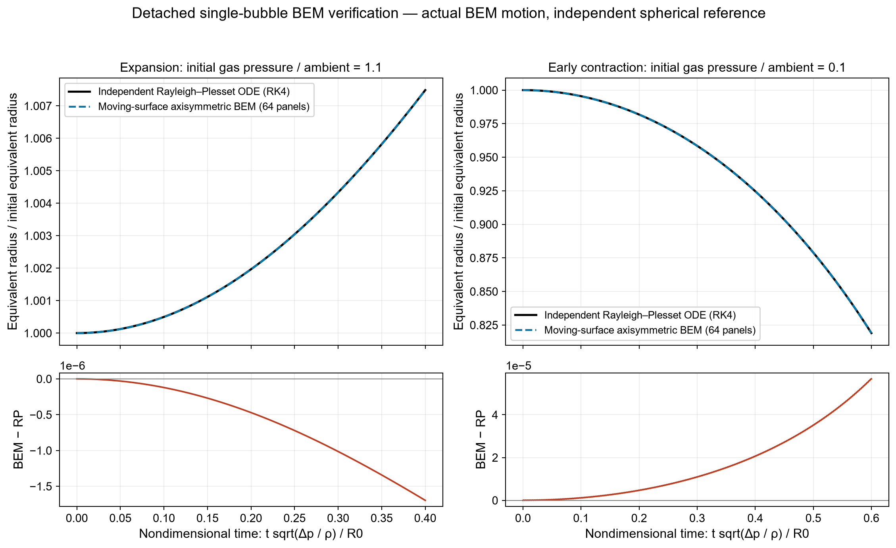
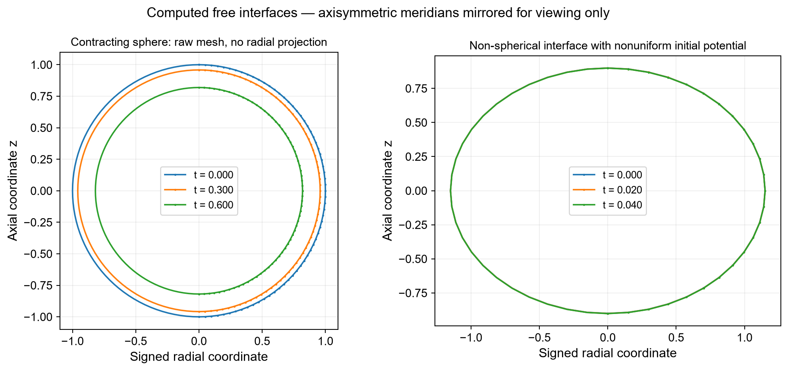

Verified scope: one closed axisymmetric bubble in an unbounded potential liquid, before unsupported impact or topology change. This page is mathematical and numerical verification; it is not experimental validation and not hydrofoil-cloud shedding.
The boundary velocity comes from the exterior Laplace boundary integrals at both Heun time stages. The surface and its potential evolve together with unsteady Bernoulli. The mesh is not forced to remain spherical. Rayleigh–Plesset is independently integrated only as the reference, never substituted into the BEM update.


Initial gas pressure / (ambient − vapour pressure) = 0.1, κ = 1.4, time/τ = 0.6; initially stationary. Radius ratios use each model's own initial radius: equivalent radius for the polygonal BEM mesh, exact radius for the spherical reference. Initial polygon volume error is therefore explicit.
| Boundary panels | Δt/τ | BEM radius ratio | Independent RP | Signed difference |
|---|---|---|---|---|
| 16 | 0.0015 | 0.819908128 | 0.819021739 | +0.00088639 |
| 32 | 0.0015 | 0.819247137 | 0.819021739 | +0.000225398 |
| 64 | 0.0015 | 0.819078474 | 0.819021739 | +5.67356e-05 |
At 64 panels the radius difference is 0.00693% for this case. This is not a general accuracy claim. The matrix residual is of order 10⁻¹⁵; it is not the physical prediction error.
The 13-test report includes exterior spherical harmonic modes l = 0, 1, 2; an ellipsoid with a manufactured analytical harmonic field; off-surface Green representation; Rayleigh gas-free contraction; spatial/time refinement; capillary equilibrium; non-spherical moving-interface steps; finite-value and geometry rejection; and excessive-step stopping.
Reproducible Node test · Equations, signs and assumptions · Actual worker/controller integration check. The latter is code-level UI coverage, not browser-rendering evidence or a new physical benchmark.
There is no solid hydrofoil in this isolated-bubble module, no shed wake, re-entrant jet, breakup, multiple bubbles, mixture transport or compressible shock dynamics. A cloud requires additional equations and topology handling, not a sequence of steady cavity pictures.
Sieber et al. (2024), BIMBAMBUM provides an open reference for more general single-bubble BEM. Its code was not copied into this independent implementation. Behbahani-Nejad & Changizian (2013) concerns unsteady partial-sheet BEM. Bhatt, Ganesh & Ceccio (2023) experimentally distinguishes re-entrant-flow and bubbly-shock hydrofoil shedding. The present module does not reproduce those experiments.